No account.
No cloud.
Just lifts.
A strength log for the gym floor. Tap the muscle, log the set, and read progress from your own sets.
Free forever · 500+ exercises · 16 languages
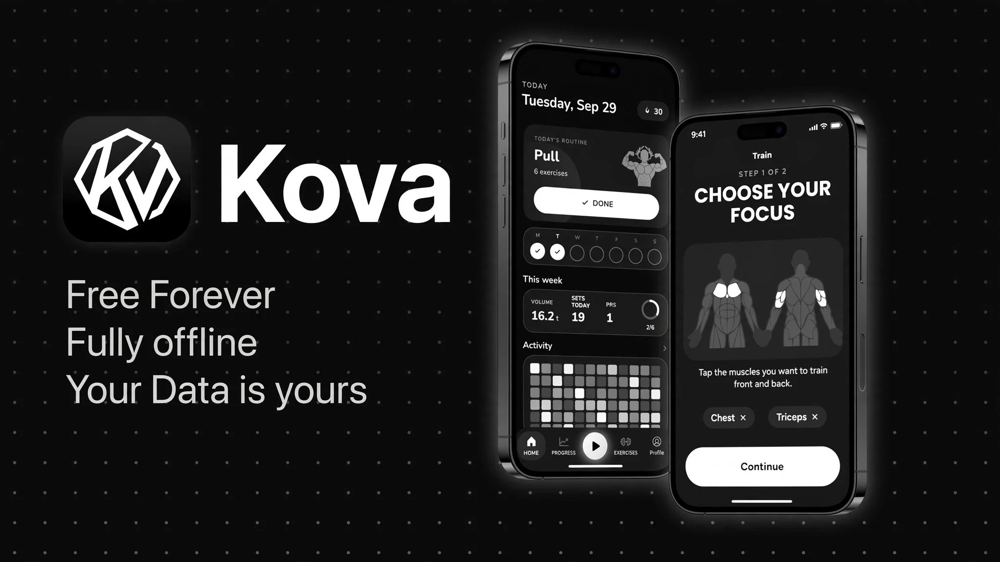
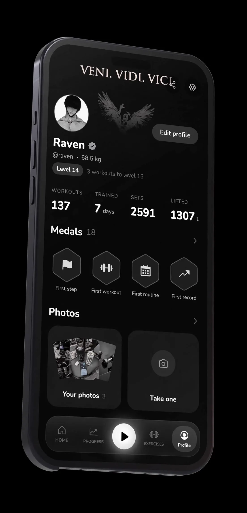
- Level
- 14
- Medals
- 18
- Lifted
- 1307 t
- 500+exercises with animation
- 16languages, dark & light
- 20medals and levels
- 0network calls, ever
↓ Get KOVA
One file.
Two taps.
No account.
KOVA is one app file that you install yourself, the same way you install anything from outside the Play Store. Nothing to sign up for, nothing to pay, and it never asks you to sign in.
- Tap download The file lands in your Downloads folder.
- Open it Your phone will ask if it may install apps from your browser. Say yes.
- Tap install That is the whole setup. KOVA opens, and there is no account to create.
My phone would not install it, or I am not sure which file to get
01 Train
Pick the muscle.
Get the session.
Most logs make you browse a list. KOVA starts with a body — tap what you want to work and the session is built around it, then stays yours to edit set by set.
- Interactive body map, front and back
- Reps, weight, RPE or RIR per set
- Rest timer with your own alarm sound, fired with the screen off
- Set types: warm-up, working, drop set, to failure
- Plates per side, worked out from the kit you actually own
- Supersets that skip the rest between two exercises
- A live session that survives a reboot
- Routines you can group, reorder and schedule per weekday
- Places — home, gym or park — offering only what you can do there
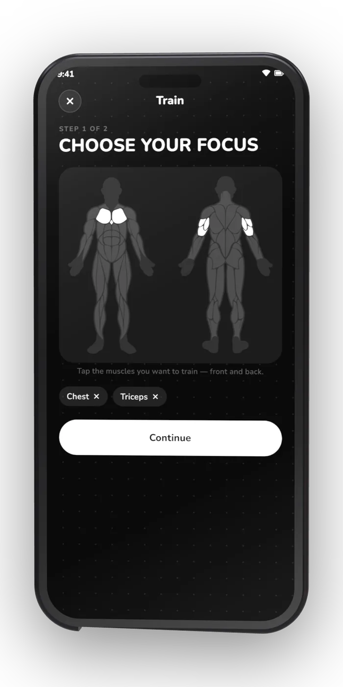
02 Progress
Numbers that came
from your own sets.
Nothing here is estimated from a profile or synced from a cloud. Every number is arithmetic on the sets you actually logged, so it can be audited by looking at them.
- Volume, streak, weekly goal ring and personal records
- Activity heatmap with per-day detail, GitHub-style
- Strength curves with estimated 1RM per exercise
- Muscle split across the last 30 days
- Progress photos on a timeline, front, side and back
- Prefer not to photograph yourself? The same timeline drawn as a muscle map
- Bodyweight and ten body measurements, each with its own curve
- Share card: streak, muscles worked, or your before and after
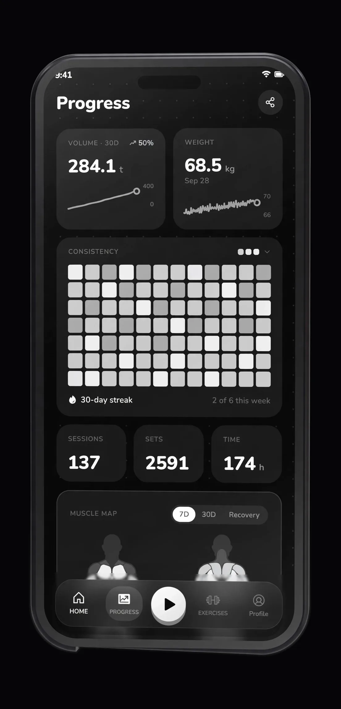
03 Exercises & tools
500+ exercises.
Your own art on any of them.
A real library with animation and step-by-step instructions, plus everything around it: a journal, calculators and home-screen widgets that read the same database.
- 500+ exercises with animation and step-by-step instructions
- Search, and filters by muscle, equipment and level
- Favourites, plus your own exercises
- Swap any exercise’s art for your own photo, GIF or video
- Training journal on a calendar — note, plan, win or niggle — with photos and video
- Six calculators: 1RM, plates, BMI, calories & macros, body fat, warm-up
- Five home-screen widgets: today, this week, activity, stats, muscle map
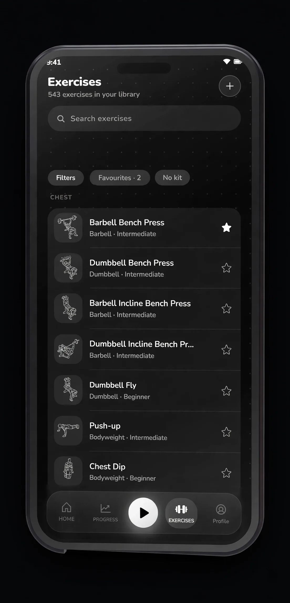
04 Your data
Yours to take.
Yours to delete.
An app that keeps your data on your phone owes you a clean way in and a clean way out. KOVA has both, and neither needs an account.
- Export to CSV, or a full ZIP backup with the media you uploaded
- Import that backup back in, unchanged
- Bring your history from Hevy, Strong, Lyfta, FitNotes, openGym or any CSV
- Routine with AI: export your exercise list, paste it into any AI tool, import the routine back
- Photos, videos and notes stay in the app’s own storage
- Delete every byte in one tap
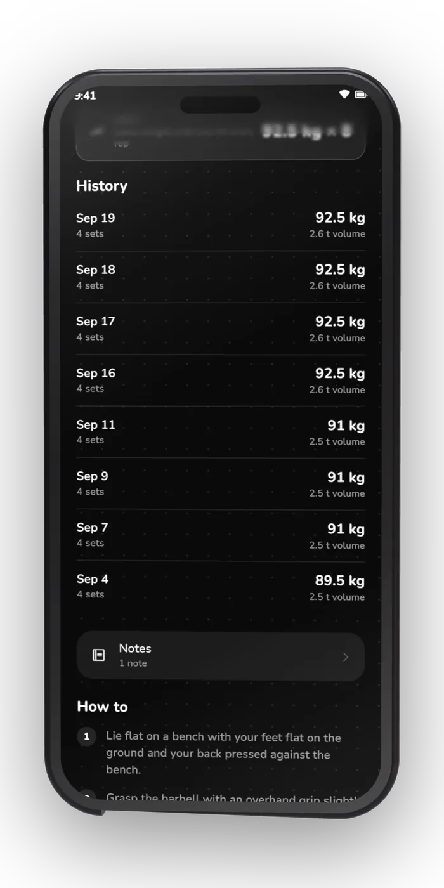
05 Privacy
It doesn’t have the
internet permission.
KOVA ships with no analytics, no advertising SDK and no network code. Android’s
INTERNET permission is never requested, so there is no mechanism, not even
a disabled one, for your training to leave the phone. Every permission below is local:
they keep the rest timer honest. The only outbound action in the whole app is a link you
tap yourself.
<uses-permission android:name="android.permission.POST_NOTIFICATIONS" />
<uses-permission android:name="android.permission.POST_PROMOTED_NOTIFICATIONS" />
<uses-permission android:name="android.permission.USE_EXACT_ALARM" />
<uses-permission android:name="android.permission.SCHEDULE_EXACT_ALARM" />
<uses-permission android:name="android.permission.USE_FULL_SCREEN_INTENT" />
<uses-permission android:name="android.permission.FOREGROUND_SERVICE" />
<uses-permission android:name="android.permission.VIBRATE" />
<uses-permission android:name="android.permission.WAKE_LOCK" />
<uses-permission android:name="android.permission.RECEIVE_BOOT_COMPLETED" />
<uses-permission android:name="android.permission.WRITE_EXTERNAL_STORAGE" android:maxSdkVersion="28" />
<!-- android.permission.INTERNET: never requested -->| Permission | Why it is there |
|---|---|
POST_NOTIFICATIONS | The rest timer counts down in the shade |
POST_PROMOTED_NOTIFICATIONS | So the running timer is not demoted to a silent, low-priority notification |
USE_EXACT_ALARM | Android 13 and later: wake exactly when the rest ends, not when it feels like it |
SCHEDULE_EXACT_ALARM | The same guarantee on Android 12 and earlier |
USE_FULL_SCREEN_INTENT | Lets the alarm take over the lock screen, since you are mid-set and not watching the screen |
FOREGROUND_SERVICE | Keeps the live session and its timer alive while you are between sets |
VIBRATE | So the alarm buzzes instead of only sounding |
WAKE_LOCK | So it still fires with the screen off |
RECEIVE_BOOT_COMPLETED | Re-arms a running timer after a reboot instead of losing it |
WRITE_EXTERNAL_STORAGE | Android 9 and earlier only, so ZIP backups can be written to shared storage |
INTERNET |
That is the complete list, taken from the shipped 1.3.0 manifest rather than from a summary. Nine of the ten exist for the rest timer and the live session, and the tenth is legacy storage for older Android. Nothing here can reach a network: photos and videos live in the app’s own storage, and there is nowhere to upload them to.
06 Every screen
Straight off the phone.
1–12 of 12
Drag it, scroll it, or focus the row and use the arrow keys.
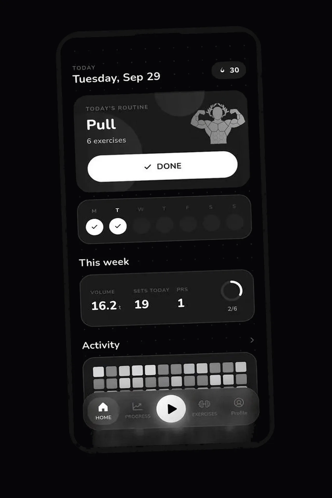
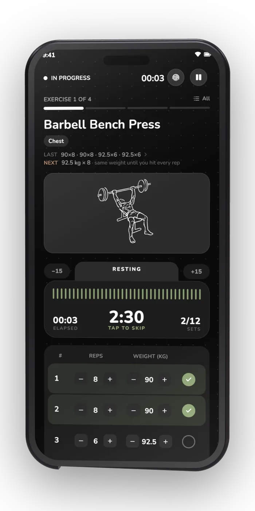
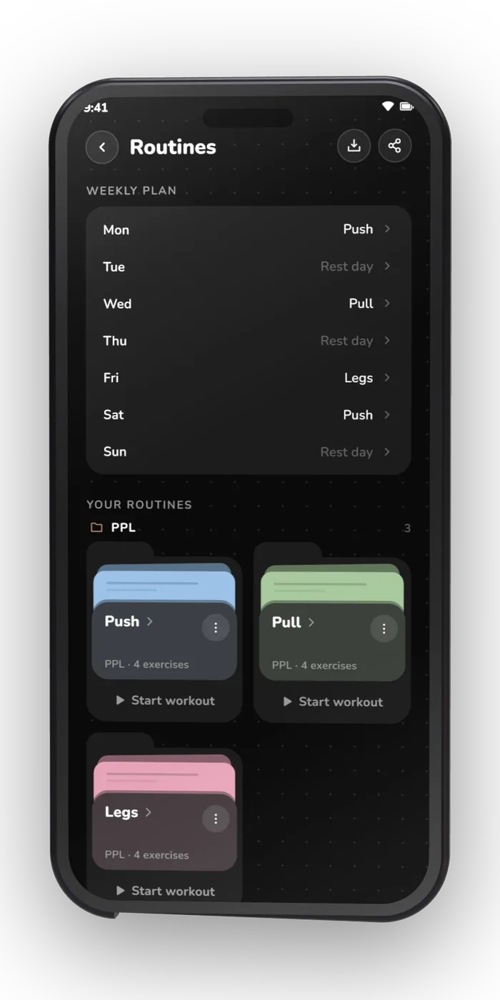
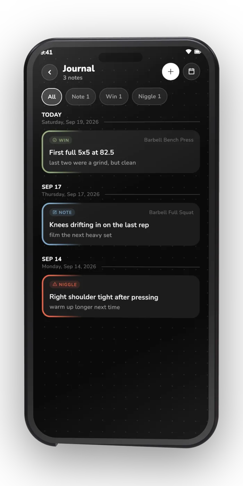
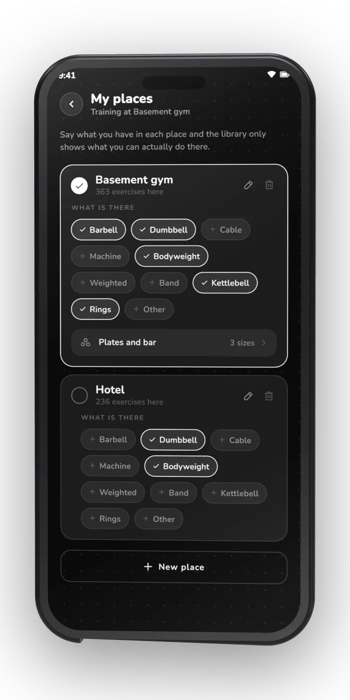
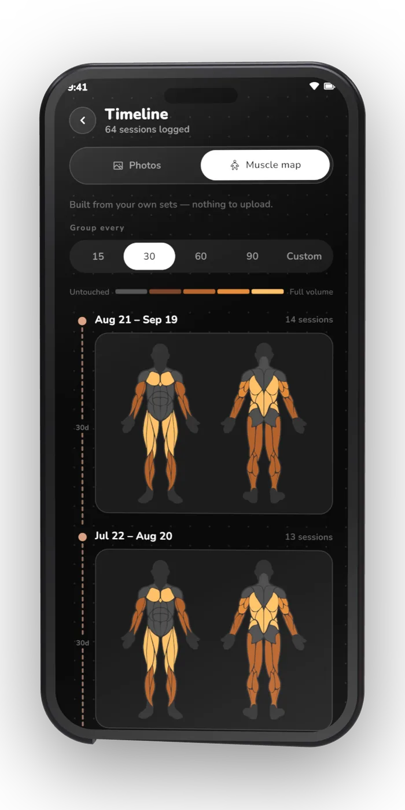
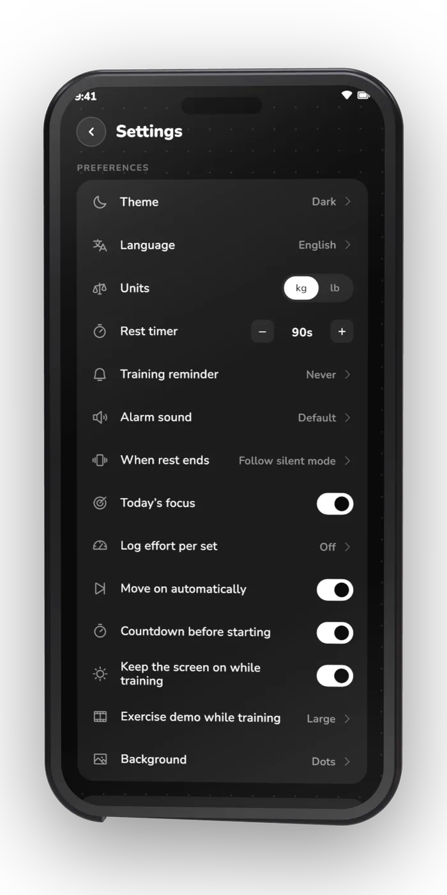
07 In the store
The listing, exactly as it ships.
The same banner and the same six cards that go out with the release. No stock gym photography, no borrowed devices.
-
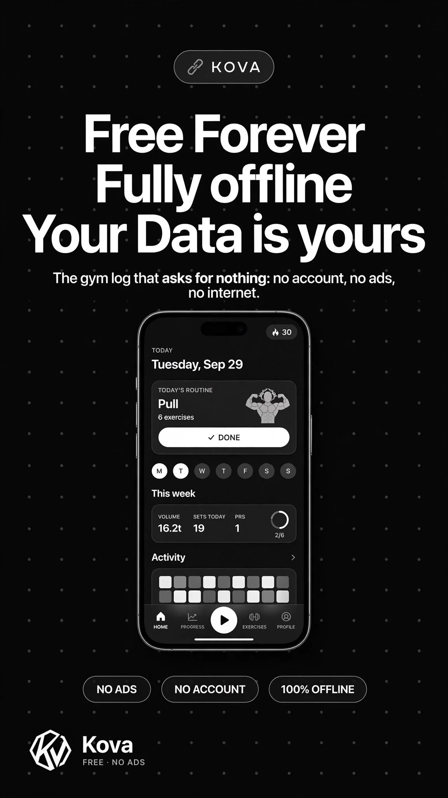
Hero -
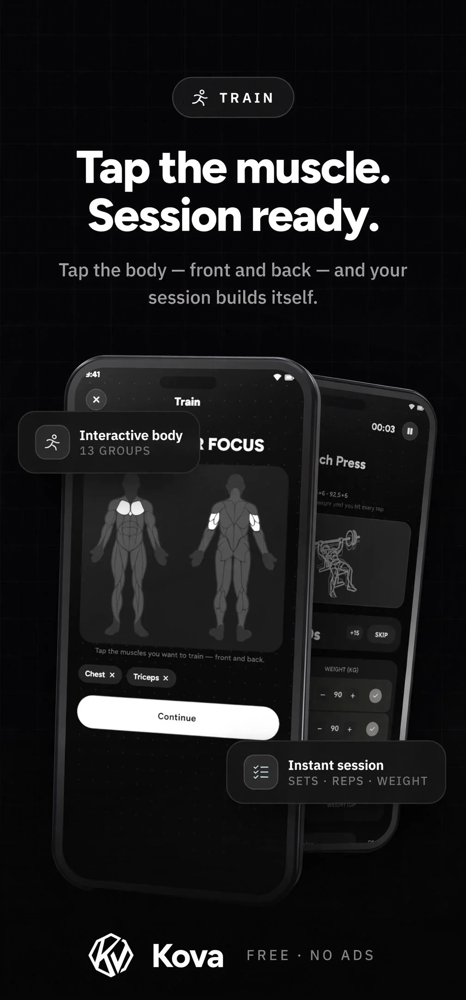
Body map -
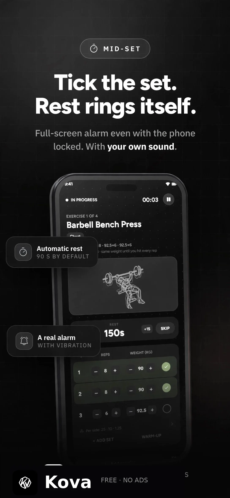
Rest timer -
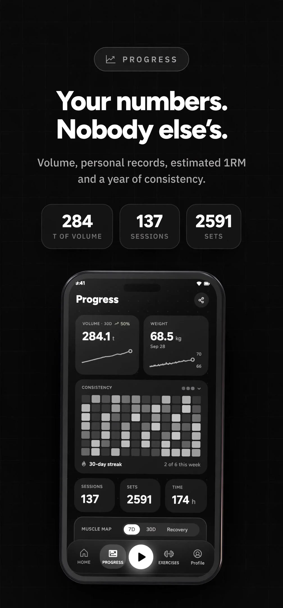
Progress -
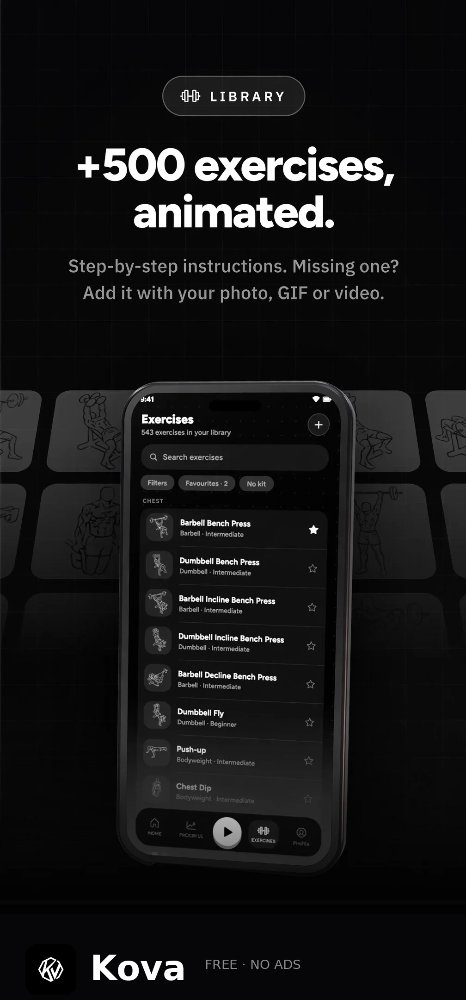
Library -
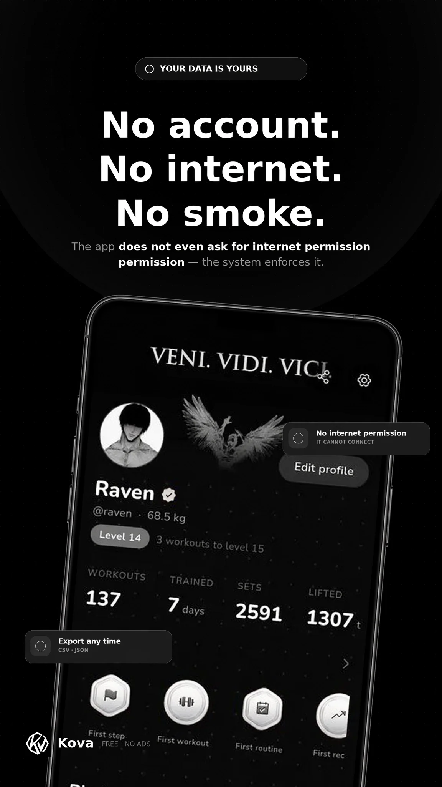
Privacy
08 Questions
The ones people
actually ask.
Is it really free, or is the catch somewhere?
There is no catch and no paid tier. No subscription, no ads, no analytics, no account. KOVA is free and always will be, and if it earns a place in your rotation and you feel like chipping in, the project’s Ko-fi is open.
How can an app work with no internet permission?
Because it never needed one. KOVA has no network code at all, so Android’s
INTERNET permission is never declared. Your sets, photos, notes and media
live in the app’s own storage on the phone, which is also what makes the app work
in a basement gym with no signal.
Can I bring my history from another app?
Yes. KOVA imports workouts and bodyweight from Hevy, Strong, Lyfta, FitNotes and openGym, and reads any CSV you can get out of the app you are leaving. Still choosing? Nine trackers compared, including where KOVA loses. You can also re-import a KOVA backup at any time.
What happens to my data if I uninstall?
It goes with the app, which is why the ZIP backup exists — it includes your data and the media you uploaded, and it imports back cleanly. Export it before you remove KOVA.
Is there an iOS version?
Not yet. KOVA ships for Android 7.0 and later today. An iOS 15+ build and a Wear OS 3+ build are both in development, and neither has a date yet. If you need an iPhone app right now, this one is not it.
Can I really delete everything?
One tap, in settings, no confirmation maze and no “are you sure” marathon. That button is the honest version of a privacy policy.
Who draws the exercises?
The illustrations come from Workout Guide by Bryl Lim, based on Everkinetic, licensed CC BY-SA 4.0. Any exercise’s art can be swapped for your own photo, GIF or video.
Can I request a feature?
Yes. Open an issue on the repository and describe what you are trying to log. Requests get read, and the ones that show up again and again from other lifters get built.